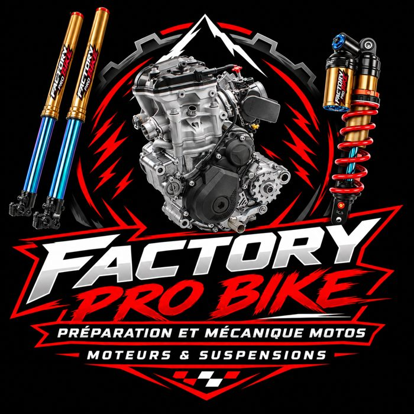

Vidange de fourche
Huile, joints spi et contrôle des tubes. Pour retrouver une fourche souple et précise.
dèsXX €
Préparation et mécanique motos à La Réunion. Moteurs et suspensions réglés comme en championnat, pour la piste, l’enduro et la route.

Factory Pro Bike est un atelier réunionnais dédié à deux savoir-faire : le moteur et la suspension. C’est là que se gagnent le plaisir de pilotage, la fiabilité et les chronos.
Chaque moto est démontée, contrôlée et remontée avec les mêmes exigences qu’une machine d’usine. Les réglages sont adaptés à votre poids, à votre niveau et à votre terrain : sentiers de l’île, pistes de cross ou route.
Vous repartez avec une moto fiable et un compte rendu clair de ce qui a été fait.
Révision, remise en cote, préparation performance.
Fourches et amortisseurs : entretien, révision, réglage sur mesure.
Un atelier local, joignable et à l’écoute des pilotes de l’île.
Des tarifs clairs, à partir de. Le prix final est confirmé par devis selon le modèle de moto et l’état des pièces.
Huile, joints spi et contrôle des tubes. Pour retrouver une fourche souple et précise.
Démontage complet, huile, gaz et contrôle des joints. Fonctionnement comme neuf.
Tarage et ressorts adaptés à votre poids, votre niveau et votre terrain.
Fourche et amortisseur révisés, réglés et validés pour la compétition.
Vidange, filtres, bougie, jeu aux soupapes et contrôle général.
Mesures, remise en cote et remontage soigné du haut moteur.
Haut et bas moteur démontés, contrôlés et remplacés si besoin.
Optimisation du moteur pour la piste : cylindre, allumage, carburation.
Freins, transmission, roulements, direction et visserie.
Contrôle complet de la moto avant votre épreuve.
Un souci, un bruit, une perte de puissance ? On identifie la cause.
Les montants « XX € » sont à remplacer par les vrais tarifs du client avant la mise en ligne.
Les réponses du professionnel aux questions les plus fréquentes. Une autre question ? Écrivez-nous plus bas.
En général, une vidange de fourche est conseillée toutes les 20 à 30 heures d’utilisation, et une révision d’amortisseur toutes les 30 à 50 heures. En usage intensif ou en conditions humides et poussiéreuses, il vaut mieux raccourcir ces intervalles.
Les signes courants sont un comportement qui devient mou ou irrégulier, des fuites d’huile sur les tubes, une moto qui rebondit ou talonne plus qu’avant, ou un manque de précision dans les virages. Dans le doute, un diagnostic permet de trancher.
Oui, c’est même l’intérêt d’une préparation. Le tarage, l’huile et les ressorts sont choisis selon votre poids, votre style de pilotage et le terrain où vous roulez, pour que la moto soit à la fois efficace et confortable.
Nous intervenons sur les motos de cross, d’enduro et de route. Indiquez simplement la marque, le modèle et l’année dans le formulaire de contact, et nous vous confirmons ce que nous pouvons faire.
Cela dépend de l’intervention : comptez quelques jours pour une révision de suspensions et plus pour une révision moteur complète. Un délai précis vous est donné dès le devis, notamment si des pièces doivent être commandées.
Remplissez le formulaire de contact en décrivant votre moto et votre besoin, ou appelez-nous. Le devis est gratuit et détaille le prix de la main-d’œuvre et des pièces avant toute intervention.
Décrivez votre moto et votre besoin. Nous vous répondons rapidement avec un devis.
AtelierAdresse à renseigner
97xxx La Réunion
Téléphone0262 00 00 00
Emailcontact@factoryprobike.re
HorairesLundi – vendredi : 8h – 17h
Samedi : sur rendez-vous